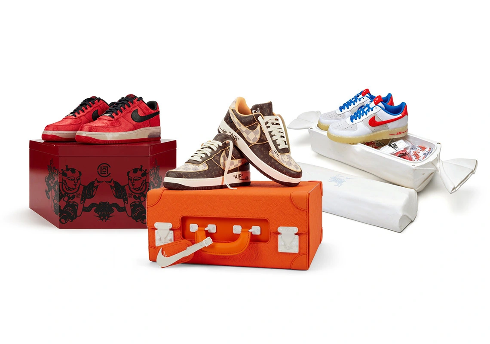
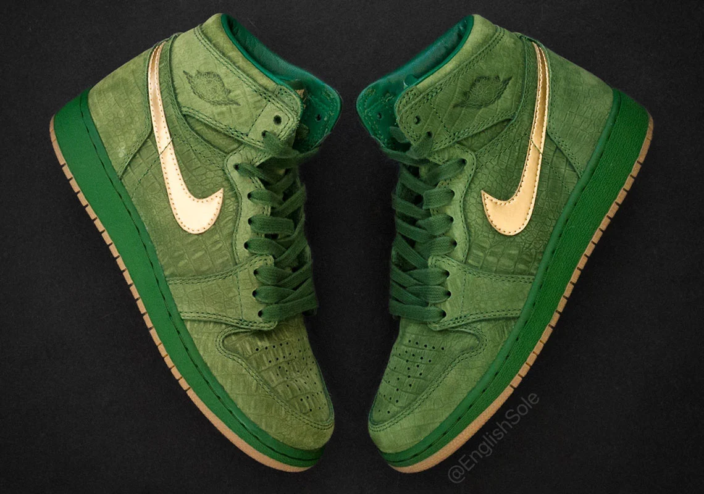

Sotheby’s Looks Back On 40 Years Of The Nike Air Force 1 With “40 For 40” Collection
The Nike Air Force 1 is an icon among icons. And since its debut in 1982, the silhouette has transcended far beyond the hardwood, walking the runway alongside Louis Vuitton, joining the late Virgil Abloh for many a beloved collaboration, and dressing the feet of celebrities aplenty

Detailed Look Jasmine Jordan’s Air Jordan 1 Pinnacle PE
As MJ’s daughter, it’s likely Jasmine Jordan has a sizable collection of PEs. One such pair was even seen on her feet about seven years ago — and as a release is, at this point, highly improbable, the only way we can enjoy the extremely rare Air Jordan 1 is through English Sole‘s photography.
The Air Jordan 4 “Infrared” Headlines This Week’s Best Releases
In 2022 thus far, the sneaker releases were as plenty as the first half of the year was quick. And now that Summer is finally here, we can finally take a breather; our wallets, however, are not entirely safe, as there are still a couple standouts sprinkled throughout the season.